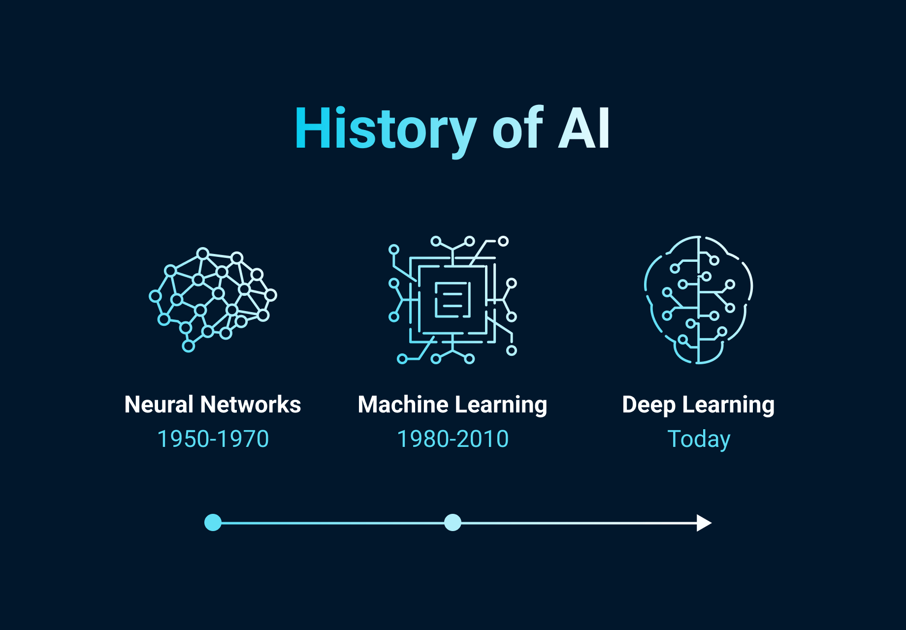
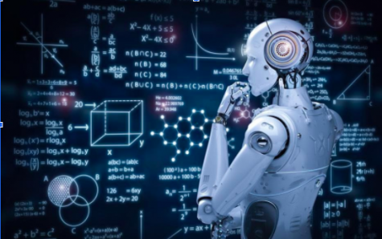
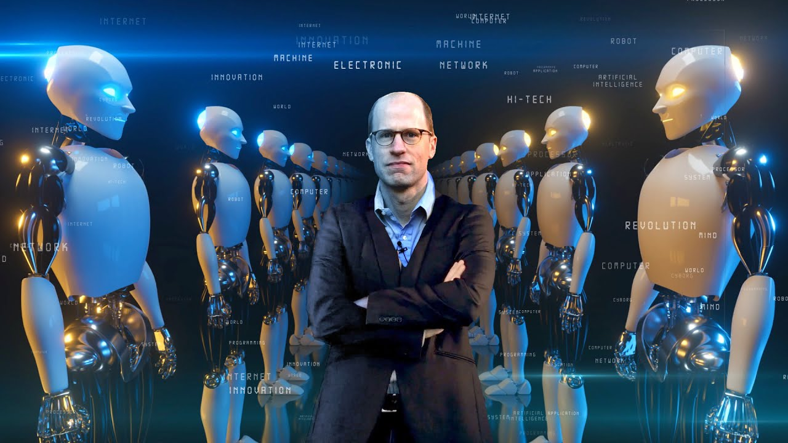
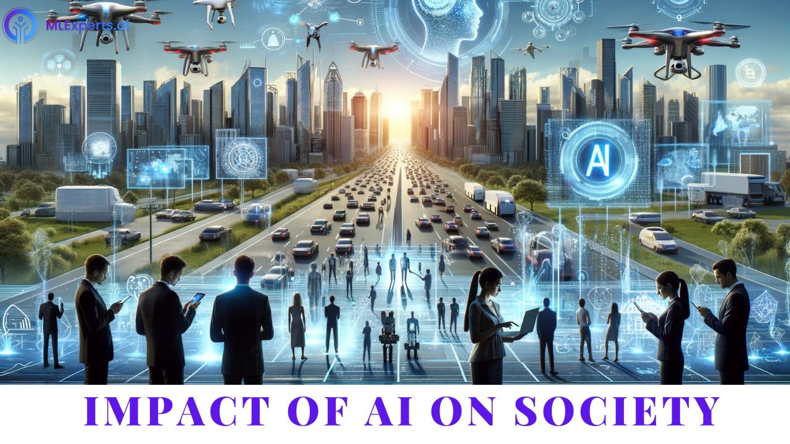
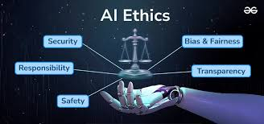

Welcome
Welcome to our page dedicated to the evolution of Artificial Intelligence! This field has seen an incredible journey from its conceptual beginnings to its current status as a cornerstone of technological advancement.
History
The history of AI dates back to ancient times, with myths and rumors of artificial beings endowed with intelligence or consciousness by master craftsmen. The concept of "thinking machines" has been part of human imagination for centuries.
However, it was after World War II and the invention of programmable computers that AI began to flourish. The 1956 Dartmouth Conference is often considered the birth of AI as a scientific field. Since then, we've seen various ups and downs in the field, known as the 'AI winters' and 'AI springs'.
Recent Advancements
In recent years, AI has made spectacular progress thanks to advances in machine learning and deep learning. These technologies have enabled computers to recognize patterns and make decisions with minimal human intervention.
The introduction of the transformer architecture has also revolutionized the field, leading to the development of models that can process language with unprecedented accuracy, such as GPT (Generative Pretrained Transformer).
The Future of AI
The future of AI is one of the most exciting aspects of the field. We are on the cusp of breakthroughs that could change the way we live, work, and interact with the world around us.
From self-driving cars to personalized medicine, AI is expected to have a profound impact on various industries. The ethical implications of AI are also an important area of discussion, as we strive to ensure that AI benefits all of humanity.
AI in Society
Artificial Intelligence has woven itself into the fabric of society, influencing sectors such as finance, healthcare, education, and more. It has transformed industries by optimizing processes, enhancing customer experiences, and enabling data-driven decision-making.
AI's role in society also raises questions about privacy, security, and the future of employment, as automation becomes more prevalent. The balance between leveraging AI for societal benefits while mitigating its risks is a continuous conversation among policymakers, technologists, and the public.
- 
AI Ethics and Governance
The ethical considerations of AI are paramount as its capabilities expand. Issues such as algorithmic bias, transparency, and accountability are at the forefront of AI ethics. Ensuring that AI systems are fair and do not perpetuate existing inequalities is a significant challenge.
Governance frameworks are being developed to guide the ethical deployment of AI. These frameworks aim to protect individuals' rights and promote the responsible use of AI, ensuring that the technology aligns with societal values and norms.
AI and Environmental Sustainability
AI has the potential to address some of the most pressing environmental issues of our time. From predicting climate change impacts to optimizing energy consumption, AI can be a powerful tool in the fight against environmental degradation.
By analyzing vast amounts of environmental data, AI can help in conservation efforts, reducing waste, and promoting sustainable practices across various industries. The intersection of AI and environmental sustainability is an area of growing importance and innovation.